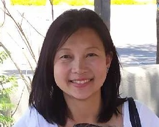
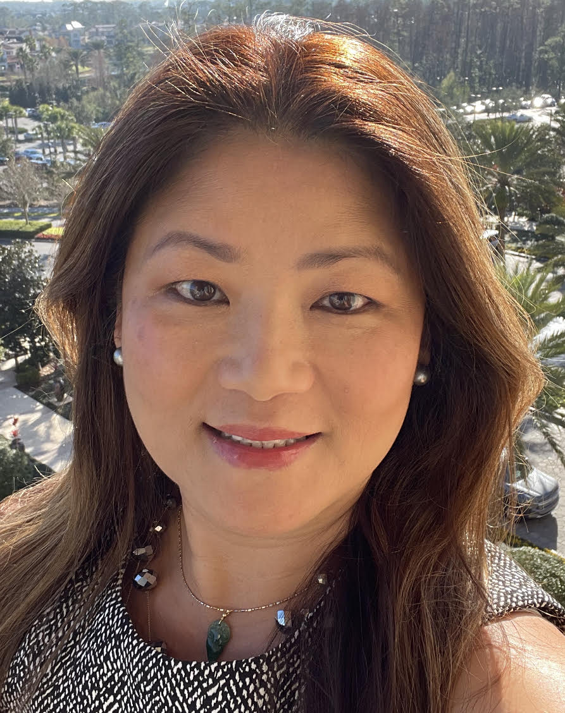

Channeling Your Inner Champion

Location
Champion Ballroom
USC Hotel
3540 South Figueroa Street
Los Angeles, CA 90007
Time
12:55 PM to 1:40 PM
Speaker
|  |
Kiet Kuru received BS and MS from MIT for Materials Science & Engineering. While working full time at Intel, earned MBA from ASU's 1st Evening MBA program. As an undergraduate, she participated in the MIT Japan Program where she interned with Sumitomo 3M in Japan. After graduation, she was recruited by Intel which also funded her MS degree. This move led her to Arizona and the start of her long career in the semiconductor industry for 30 years. It was at Intel where I got my MBA from ASU, also where I met my husband. She was at Intel for 14yrs before she moved to 4 more semiconductor companies, all part of M&As landing her at various technical and commercial management roles including Directorship and General Management for a Swiss company, Abilis, to a Taiwanese company, ALi Technologies and now with a German company, Infineon. She has 2 children, both graduating this year, one from HS, one from college. She enjoys doing laser engraving as a hobby and sells her creations under the Uniqkool brand online. Other than that, she also enjoys hiking, volunteering and reconnecting with old friends and classmates. |
|---|---|
|  |
Candy Yu follows USC football! She is the Current ISC Director of Supplier Readiness for Air & Thermal Products and AllAbilities Employee Network West Region leader at Honeywell. She has also been a program Manager in Supplier Engineering and New Product Development since 2019. Candy Yu Has worked for Intel, Motorola, Ingersoll Rand, Rogers and Carlisle so far. She currently holds an MS degree in Industrial Engineering from Arizona State University and a BS degree in Physics from Santa Clara University. Fun facts: Candy collects President’s Awards and ready for the 3rd. She has been to 48 states and many national parks. She loves to take epic hikes (Havasupai Fall, Angel’s Landing in Zion NP and Grand Canyon NP) before a new role. She is a mother of four and an I&D and Arts advocate. |